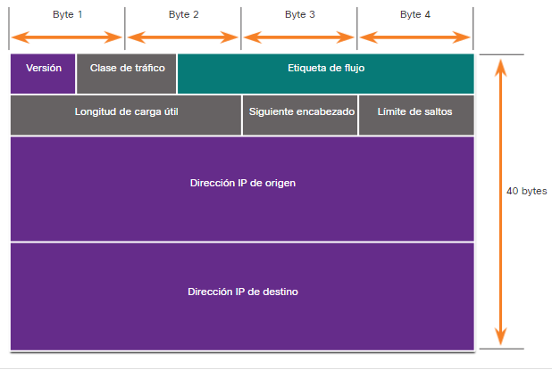

Proceso de comunicaciones de red
Redes de muchos tamaños
Hay redes de todos los tamaños. Van desde redes simples que constan de dos computadoras hasta redes que conectan millones de dispositivos.
Las redes domésticas simples le permiten compartir recursos, como impresoras, documentos, imágenes y música, entre algunos dispositvios finales locales.
Las redes de oficionas pequeñas y oficionas en el hogar (SOHO) permiten que las personas trabajen desde casa o desde una oficiona remota. Muchos trabajadores autónomos usan este tipo de redes para anunciar y vender productos, pedir suministros y comunicarse con los clientes.
Las empresas y las grandes organizaciones utilizan las redes para proporcionar consolidaciones, almacenamiento y acceso a la información en los servidores de red. Las redes proporcionan correo electrónico, mensajería instantánea y colaboración entre los empleados. Muchas organizaciones usan la conexión de su red a Internet para proporcionar productos y servicios a los clientes.
Internet es la red más grande que existe. de hecho, el término internet significa una red de redes. Es una colección de redes públicas y privadas interconectadas.
En pequeñs empresass y hogares, muchas computadoras funcionan como servidores y clientes en la red. Este tipo de red se denomina red peer-to-peer.
Comunicaciones cliente-servidor
Todas las computadoras que están conectadas a una red y que participan directamente en la comunicación de la red se clasifican como hosts. Los hosts también se denominan dispositivos finales, puntos finales o nodos. Gran parte de la interacción entre los dispositivos finales es el tráfico cliente-servidor. Por ejemplo, cuando accede a una página web en Internet, su navegador web (el cliente)
accede a un servidor. Cuando envía un mensaje de correo electrónico, su cliente de correo electrónico se conectará a un servidor de correo electrónico.
Los servidores son simplemente computadoras con software especializado. Este software permite a los servidores proporcionan información a otros dispositivos finales en la red. Un serviddor puede tener un solo propósito y proporcionar un solo servicio, como página web. Un servidore puede ser multipropósito, proporcionando una variedad de servicios como páginas web, correo electrónico y transferencias de archivos.
Los equipos cliente tienen software instalado, como navegadores web, clientes de correo electrónico y aplicaciones de transferencias de archivos. este software les permite solicitar y visualizar la información obtenida del servidor. Una sola computadora también puede ejecutar varios tipos de software de cliente. Por ejemplo, un usuario puede consultar el correo electrónico y ver una página web mientras escucha la radio por Internet.
- Servidor de archvios. El servidor de archivos almancena archivos corporativos y de usuario en una ubicación central.
- Servidor web. El servidor web ejecuta un software de servidor web que permite que muchas computadoras acceden a páginas web.
- Servidor de correo electrónico. El servidor de correo electronico ejecuta un software de servidor de correo electrónico que permite enviar y recibir correos electrónicos.
Sesiones típicas
Un usuario de red típico en la escuela, en casa o en la oficina, normalmente utilizará algún tipo de dispositivo informático para establecer muchas conexiones con servidores de red. Esos servidores pueden estar ubicados en la misma sala o en todo el mundo. Veamos algunas sesiones típicas de comunicación en red.
Trazando el camino
Tendemos a pensar en las redes de datos que usamos en nuestra vida diaria cuando pensamos en conducir un automóvil. Realmente no nos importa lo que suceda en el motor mientras el coche nos lleve a donde queremos ir. Sin embargo, al igual que el mecánico de un automóvil conoce los detalles de cómo funciona un automóvil, los analistas de ciberseguridad deben tener una comprensión profunda de cómo funcionan las redes.
Cuando nos conectamos a un sitio web para leer las redes sociales o comprar, rara vez nos preocupamos por cómo nuestros datos llegan al sitio web y cómo nos llegan los datos del sitio web. No somos conscientes de las muchas tecnologías que nos permiten utilizar Internet. Una combinación de cables de cobre y fibra óptica que pasan por tierra y por debajo del océano transportan tráfico de datos. También se utilizan tecnologías inalámbricas y satelitales de alta velocidad.
Estas conexiones conectan las instalaciones de telecomunicaciones y los proveedores de servicios de Internet (ISP) que se distribuyen por todo el mundo, como se muestra en la figura. Estos ISP globales de Nivel 1 y Nivel 2 conectan partes de Internet juntas, generalmente a través de un Punto de Intercambio de Internet (IXP). Las redes más grandes se conectarán a las redes de nivel 2 a través de un punto de presencia (PoP), que suele ser una ubicación en el edificio donde
se realizan las conexiones físicas con el ISP. Los ISP de nivel 3 conectan hogares y empresas a Internet.
Debido a las diferentes relaciones entre los ISP y las empresas de telecomunicaciones, el tráfico de una computadora a un servidor de Internet puede tomar muchos caminos. El tráfico de un usuario en un país puede tomar una ruta muy indirecta para llegar a su destino. El tráfico puede viajar primero desde el ISP local a una instalación que tenga conexiones con muchos otros ISP. El tráfico de Internet de un usuario puede recorrer muchos cientos de millas en una dirección
solo para enrutarse en una dirección completamente diferente para llegar a su destino. Parte del tráfico puede tomar ciertas rutas para llegar al destino y luego tomar rutas completamente diferentes para regresar.
Los analistas de ciberseguridad deben poder determinar el origen del tráfico que ingresa a la red y el destino del tráfico que sale de ella. Comprender la ruta que toma el tráfico de red es esencial para esto.
Práctica de laboratorio: seguimiento de una ruta.
¿Qué son los protocolos?
Realizar simplemente la conexión física por cable o inalámbrica entre los terminales no es suficiente para habilitar la comunicación. Para que se produzca la comunicación, los dispositivos deben saber “cómo” comunicarse. La comunicación, ya sea cara a cara o por una red, está regida por reglas denominadas protocolos. Estos protocolos son específicos del tipo de método de comunicación en cuestión. Por ejemplo, considere a dos personas que se comunican cara a cara. Antes de comunicarse, deben acordar cómo hacerlo. Si en la comunicación se utiliza la voz, primero deben acordar el idioma. A continuación, cuando tienen un mensaje que compartir, deben poder dar formato a ese mensaje de una manera que sea comprensible. Por ejemplo, si alguien utiliza el idioma español, pero la estructura de las oraciones es deficiente, el mensaje se puede malinterpretar fácilmente. Del mismo modo, los protocolos de red especifican muchas características de la comunicación de red, como se muestra en la figura.
Protocolos de red
Los protocolos de red ofrecen los medios para que las computadoras se comuniquen en las redes. Los protocolos de red determinan la codificación, el formato, la encapsulación, el tamaño, la distribución y las opciones de entrega del mensaje. Los protocolos de red definen un formato y un conjunto de reglas comunes para intercambiar mensajes entre dispositivos. Algunos de los protocolos de red más comunes son Hypertext Transfer Protocol (HTTP), el protocolo de control de transmisión (TCP) y el protocolo de Internet (IP). Como analista de ciberseguridad, debe estar muy familiarizado con la estructura de los datos del protocolo y cómo funcionan los protocolos en las comunicaciones de red. Nota: IP en este curso se refiere tanto a los protocolos de IPv4 como a los de IPv6. IPv6 es la versión más reciente de IP y, con el tiempo, sustituirá al protocolo IPv4 más común.
La suite de protocolos TCP/IP
Hoy en día, el conjunto de protocolos TCP/IP incluye muchos protocolos y continúa evolucionando para admitir nuevos servicios. Algunos de los más comunes se muestran en la figura.
Capas


Formato y encapsulamiento del mensaje
Cuando se envia un mensaje desde el origen hacia el destino, se debe utilizar un formato o estructura específicos. Los formatos de los mensajes dependen del tipo de mensaje y el canal que se utilice para entregar el mensaje.
Analogía
Un ejemplo común de requerir el formato correcto en las comunicaciones humanas es cuando se envía una carta. Haga clic en Reproducir en la figura para ver una animación de formato y encapsulación de una letra. El sobre tiene la dirección del emisor y la del receptor, cada una escrita en el lugar adecuado del sobre. Si la dirección de destino y el formato no son correctos, la carta no se entrega. El proceso que consiste en colocar un formato de mensaje (la carta) dentro de otro formato de mensaje (el sobre) se denomina encapsulamiento. La desencapsulación ocurre cuando el destinatario invierte el proceso y la carta se saca del sobre.
Red
Semejante a enviar una carta,Un mensaje que se envía a través de una red de computadoras sigue reglas de formato específicas para que pueda ser entregado y procesado. Protocolo de Internet (IP) es un protocolo con una función similar a la del ejemplo sobre. En la figura, los campos del paquete de Protocolo de Internet versión 6 (IPv6) identifican el origen del paquete y su destino. IP es responsable de enviar un mensaje desde el origen del mensaje al destino a través de una o más redes. Nota: Los campos del paquete IPv6 se analizan en detalle en otro módulo. 
Tamaño del mensaje
Otra regla de comunicación es el tamaño del mensaje.
Analogía
Cuando las personas se comunican, los mensajes que envían, normalmente, están divididos en fragmentos más pequeños u oraciones. El tamaño de estas oraciones se limita a lo que la persona que recibe el mensaje puede procesar por vez, como se muestra en la figura. También hace que sea más fácil para el receptor leer y comprender.
Red
De manera similar, cuando se envía un mensaje largo de un host a otro a través de una red, es necesario separarlo en partes más pequeñas, como se muestra en la figura 2. Las reglas que controlan el tamaño de las partes, o tramas que se comunican a través de la red, son muy estrictas. También pueden ser diferentes, de acuerdo con el canal utilizado. Las tramas que son demasiado largas o demasiado cortas no se entregan.
Las restricciones de tamaño de las tramas requieren que el host de origen divida un mensaje largo en fragmentos individuales que cumplan los requisitos de tamaño mínimo y máximo. El mensaje largo se enviará en tramas independientes, cada trama contendrá una parte del mensaje original. Cada trama también tendrá su propia información de direccionamiento. En el host receptor, las partes individuales del mensaje se vuelven a unir para reconstruir el mensaje original.
Sincronización del mensaje
El tiempo de los mensajes también es muy importante en las comunicaciones de red. El tiempo de los mensajes incluye lo siguiente:
- Control de flujo - Este es el proceso de gestión de la velocidad de transmisión de datos. La sincronización también afecta la cantidad de información que se puede enviar y la velocidad con la que puede entregarse. Por ejemplo, Si una persona habla demasiado rápido, la otra persona tendrá dificultades para escuchar y comprender el mensaje. En la comunicación de red, existen protocolos de red utilizados por los dispositivos de origen y destino para negociar y administrar el flujo de información.
- Tiempo de espera de respuesta (Response Timeout) - Si una persona hace una pregunta y no escucha una respuesta antes de un tiempo aceptable, la persona supone que no habrá ninguna respuesta y reacciona en consecuencia. La persona puede repetir la pregunta o puede continuar la conversación. Los hosts de las redes tienen reglas que especifican cuánto tiempo deben esperar una respuesta y qué deben hacer si se agota el tiempo de espera para la respuesta.
- Métodos de acceso - Determina en qué momento alguien puede enviar un mensaje. Haga clic en Reproducir en la figura para ver una animación de dos personas hablando al mismo tiempo, luego se produce una "colisión de información" y es necesario que las dos retrocedan y comiencen de nuevo. Del mismo modo, cuando un dispositivo desea transmitir en una LAN inalámbrica, es necesario que la tarjeta de interfaz de red (NIC) WLAN determine si el medio inalámbrico está disponible.